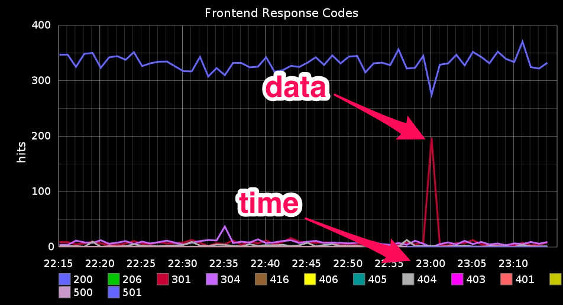

logstash
logs are awesome.
hello.
I get angry at computers.
hate-driven
development
fpm
 everyone has outages. show some love.
everyone has outages. show some love.
agenda
- open source and community
- what is a log?
- what's new in logstash?
- logstash ecosystem news
OPEN SOURCE
open means community

If a new user has a bad time,
IT'S A BUG.
what is a log?
what is a log?
192.168.1.101 - - [21/Aug/2013 19:49:33] "GET /js/config.js HTTP/1.1" 200 -
data timestamp data
what is a log?
time + data = log
what is logstash?
- input: take logs from somewhere
- filter: parse, process, or combine logs
- output: ship them somewhere else
- ... in real-time
logstash should be:
- fast
- easy to learn
- easy to deploy
- easy to operate
- easy to extend
it's a bug.
and we can fix it.
what's coming up?
logstash 1.2
(coming next week!)
125 plugins so far
speed is way up!
- 3.5x higher event rate
- dramatically faster startup time
conditionals
if this, then that.
conditionals
output {
# Notify nagios on http 5xx's
# for events with a 'status' field.
if [status] >= 500 {
nagios { ... }
}
}conditionals
filter {
# Group filters by types
if [type] == "syslog" {
grok { ... }
date { ... }
if [program] == "sshd" {
grok { ... }
}
}
}conditionals
output {
# Put debug logs in a separate place.
if [loglevel] =~ /INFO|DEBUG/ {
elasticsearch { index => "debug" }
} else {
elasticsearch { }
# Save non-debug logs to monthly logs
file {
path => "/var/log/app.%{+YYYY-MM}.log"
}
}
}conditionals
output {
# Spam ops if an event is tagged 'oops'
if "oops" in [tags] {
email { to => "ops_loves_email@example.com" }
# Notify the ops room in hipchat, perhaps?
hipchat { ... }
# Or maybe page somebody?
pagerduty { description => "Stuff is busted!" }
}
}new json schema
ships with kibana 3
do you recognize this?

ecosystem news

elasticsearch
- version 0.90.x is awesome
- much improved memory usage
- compression by default (55% savings)
visualize. share. awesome.
visualize all

pie
table
bar

logstash puppet module
- has tests
- versioned releases
- officially maintained
logstash puppet module
# logstash config
input {
file {
type => "syslog"
path => "/var/log/messages"
}
}
output {
elasticsearch { }
}
...# the same in puppet
logstash::input::file {
"allyourmessages":
type => "syslog",
path => "/var/log/messages";
}
logstash::output::elasticsearch {
"index all the things": ;
}grokdebug.herokuapp.com
interactively write and debug grok patternsexpiring old logs
# Quickly delete logs older than 90 days
% python logstash_index_cleaner.py -d 90
logstash.net
#logstash on freenode irc
logstash-users@googlegroups.com